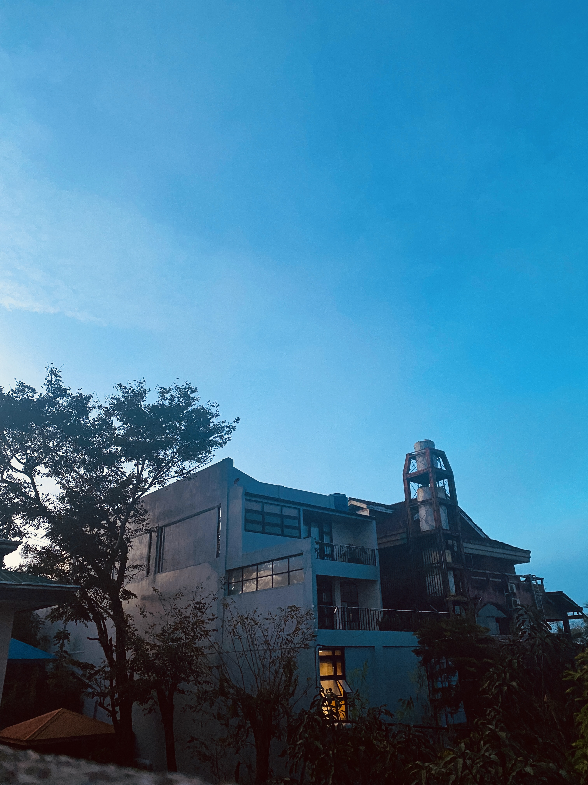
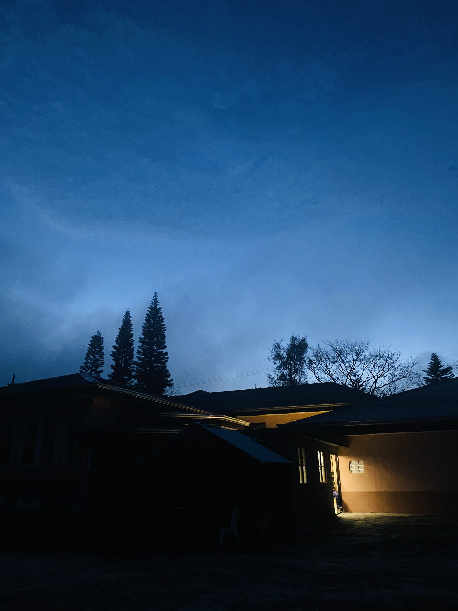

I demonstrate my visual-spatial intelligence through my ability to visualize ideas, imagine things vividly, and form detailed mental images. I enjoy exploring how things appear in my mind and how I can translate those images into something tangible. I also experience what I consider to
I demonstrate my visual-spatial intelligence through my ability to visualize ideas, imagine things vividly, and form detailed mental images. I enjoy exploring how things appear in my mind and how I can translate those images into something tangible. I also experience what I consider to 
be an eidetic memory, which helps me recall visual details and mentally picture things I have encountered. These abilities allow me to appreciate the visual aspects of my surroundings and express my ideas through design.One example of this intelligence is the layout of my e-portfolio website. I designed it with simple, soft, and smooth visual elements to create a clean and pleasant experience for visitors. Each section features a different theme corresponding to a specific type of intelligence, while the default theme uses a warm coffee-inspired aesthetic.

This reflects my ability to imagine how different visual elements can work together to communicate a concept and establish a particular atmosphere. Additionally, I enjoy photography, especially capturing picturesque scenery and visually appealing moments. Although I am not an expert, I appreciate finding interesting perspectives, compositions, and details that make ordinary sights beautiful. Through these experiences, I express my visual creativity and appreciation for the world around me.